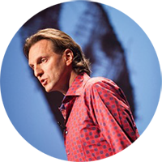
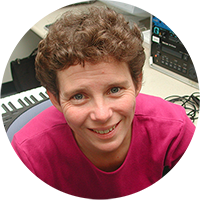

Keynote Speakers

Prof. Frederic Fol Leymarie
Frederic Fol Leymarie, a professor of Computing, is the co-director and co-founder (in 2008) of the post-graduate program in Computer Games and Entertainment at Goldsmiths, University of London. On the research front, Frederic is developing a mathematical language for shape representation with potential for applications in various domains and industries, from the Arts and Performance areas to Biology, Medicine, Computer Aided Design (CAD), Architecture, and more. He is the co-founder of London Geometry (in 2011), a leading consultancy, providing professional training for the games industry and developing serious games and interactive graphics solutions.
Frederic did his studies in the realm of A.I. first at McGill University, Canada (at the Center for Intelligent Machines) and then at Brown University, USA (in the Engineering Division), where he was co-founder of the SHAPE Lab (in 2000).
“Drawing, Gestures, Robots”
Abstract : The art of drawing provides an interesting domain of study to learn about human visual perception, movements, artistic generative skills, and explore their biomimicry in articulated machines. In turn, such robotic systems provide platforms to further study the human capacity to dynamically create artefacts.
I will briefly survey the state of the art which sits at the intersection of this multi-disciplinary research domain, and then present recent developments in my group where we focus on the art of graffiti writing and the related venerable discipline of calligraphy. Specifically, our approach is informed by the field of graphonomics which is focused on the computational analysis and synthesis of handwriting traces and motions. More generally our work is centred on an understanding of the movement dynamics that underlie the generation of various art forms. We also aim at developing computational models that can enable the transfer of complex and personal artistic skills to robotic platforms. More info: http://www.doc.gold.ac.uk/autograff/
Website: www.folleymarie.com

Kate Stevens
Cognitive psychologist Catherine (Kate) Stevens investigates the psychological processes in creating, perceiving, and performing music and dance, and applies experimental methods to evaluate human-computer/robot interaction. She holds BA (Hons) and PhD degrees from the University of Sydney. Research projects have examined: the implicit learning of musical rhythm and timing; the psychophysics and psychophysiology of musical loudness; cognitive and affective reactions to contemporary dance; and long-term memory for music and dance. She is author of more than 170 articles, book chapters, conference proceedings papers, and an ebook on creativity and cognition in contemporary dance. Kate is Professor in Psychology and Director of Research and Engagement in the MARCS Institute for Brain, Behaviour and Development at Western Sydney University.
“Thought Made Visible: Memory for Dance: A Moving Record of the Past and the Future”
Abstract: Contemporary dance on the one hand is fleeting, ephemeral. Contemporary dancers’ brains and bodies, on the other hand, are a vital and dynamic record of works performed and catalysts of works to come. I will explore the way research has the potential to capture, analyse and archive dance, and the way dancers and choreographers make visible cognition, with a focus on processes of human learning and memory. A mix of lab- and studio-based experiments will be presented.
Learning can be described as the development of expectations from experience in particular environments. “Schematic expectations” exist for a general class of materials (e.g., contemporary dance) and “veridical expectations” for a particular work. Analysis of eye movements and eye fixations of expert and novice dancer observers support the hypotheses that expertise is associated with acquired expectations and that such expectations develop from even the single presentation of a work. The flip side of learning long-term memory and its multimodal nature has been examined in a dance documentation project. Four mature dancers returned to the studio to reproduce extended dance exercises that they had not performed for between 3 and 30 years. One of the challenges in studying long-term memory in dance is the precision and distribution of dancer’s memory. We addressed this problem in a recent study by engaging dancers in designing the experiment and selecting the stimuli!
The series of experiments reveal long-term memory as distributed, malleable, and as multimodal expectations that enable prediction. Experimental data are archives of human performance, and recalling dance material in solo, duo and ensemble work tangible, temporal and visible records of thought and cognition. Dance is knowledge declared through the body.
Websites:
http://www.westernsydney.edu.au/marcs
http://katestevens.weebly.com